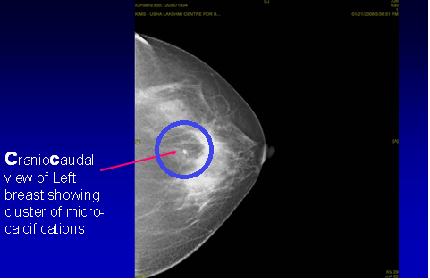
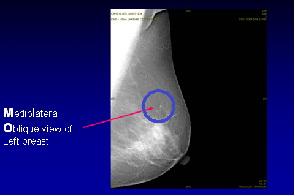

What is a Mammogram?
A Mammogram (X ray of breast) done in someone who has noticed a breast lump / recent change in breast. A combination of Clinical breast examination by a Specialist, Mammogram & breast ultrasound will help detect/rule out a problem in the breast
Doctor..I cannot feel a lump. Why should I have a Mammogram?
What is a Screening Mammogram?
A Mammogram (X ray of breast) done to detect breast cancer in the impalpable stage when neither the lady nor the doctor can feel a lump in the breast. It is advisable to have a Screening Mammogram once every year from the age of 40.
Breast Screening by way of Mammography (X- ray of the breasts) is an effective proven way of detecting breast cancer early many years before it shows up. Early detection of breast cancer offers the best chance of successful treatment, which translates to significantly improved survival




Is Breast cancer screening effective in all age groups?
Whilst it is important for women of all ages to be 'Breast Aware', Breast Screening is effective only in women over the age of 40 years. Routine breast screening for women under 40 and without symptoms has not yet been proven to be effective.
Is it safe to have a Mammogram? Does it cause radiation hazard?
It is indeed safe to have a Mammogram. Mammography involves a tiny dose of radiation – the risk to health from this is insignificant. The radiation dose delivered during Mammography is same as receiving a dental X ray.
Is Mammography Painful?
Whilst Mammography may cause momentary discomfort, it should not be painful if it is done by a properly trained Radiographer. With Digital Mammography, the discomfort is even less
What is the difference between a conventional Mammogram and a Digital Mammogram?
Full Field Digital mammography is a revolutionary advance in which an image of the breast can be produced in about five seconds (compared to four to five minutes with a traditional mammogram). This new technique is more effective than standard mammography in showing up early subtle breast cancer changes & is particularly useful in younger women with dense breasts. Other advantages being even less discomfort and negligible radiation exposure compared with conventional mammogram & greater accuracy as highlighted above.
Moreover, with the availability of Telemedicine facilities, digital images can be sent anywhere across the World for a second opinion. As the Machine is very expensive, Full Field Digital Mammography is not widely available in India.
Is Mammography 100% accurate in detecting breast cancer?
Mammograms are the most efficient way of detecting breast cancer early. Like other screening tests, they are not perfect. The accuracy of mammography is around 85%.The reasons are:
What is the role for MRI of the Breast?
Breast MRI is not recommended for routine Breast screening or in the evaluation of every patient with breast cancer.
It is however, extremely useful under certain specific circumstances: